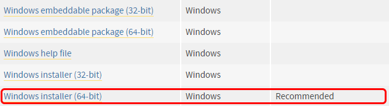
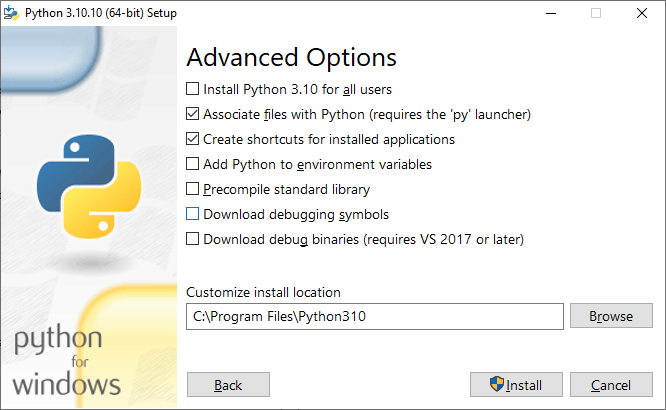
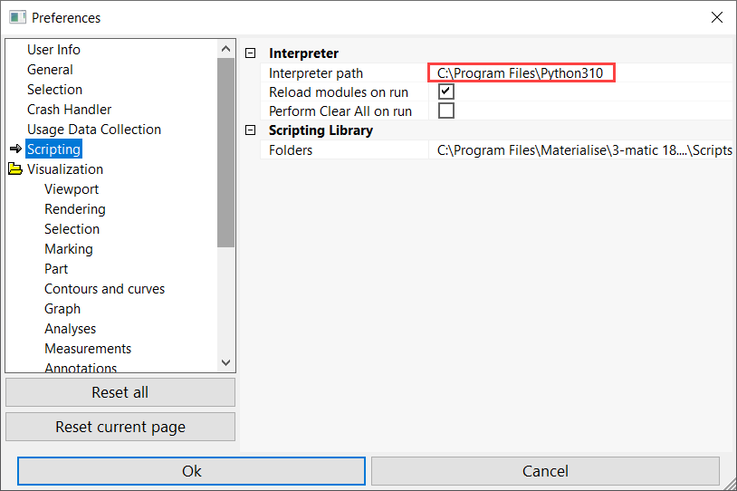
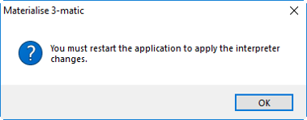
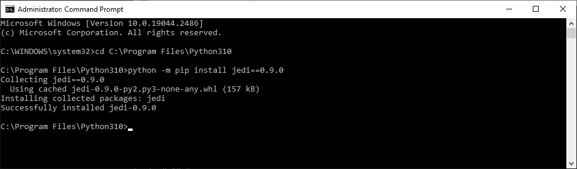

2. Python installation¶
To use scripting in 3-matic, Python 3.10 needs to be installed, as explained in this section.
2.1. Configuring 3-matic for scripting¶
3-matic scripting features require the following to run effectively:
- Python version must be 3.10.x.
- Jedi package is needed to make autocomplete work in the internal editor and console.
- RPyC package is needed to make external IDE work.
It is required to install a 64-bit version of the Python 3.10 which can be obtained from the following website: https://www.python.org/downloads/release/python-31010
Step 1: It is recommended to use the executable installer for convenience.
{kind=link}
Step 2: Run the executable in administrator mode and choose the custom installation.
Step 3: Set desired install location e.g. “C:\Program Files\Python310”.
{kind=link}
Step 4: After a successful installation, close the wizard and open up 3-matic.
Step 5: Open Options & Help -> Preferences -> Scripting and set the interpreter path to the location of the installed Python e.g. “C:\Program Files\Python310”.
{kind=link}
Step 6: Restart the application for the changes to be made available.
{kind=link}
Note that when Python is installed, it typically becomes the default Python on your computer. We recommend to set your interpreter path to the last Python version that you installed.
2.2. Installing extra packages (optional)¶
To enjoy the full functionality of 3-matic and its scripting features, it is required to install two Python packages (Jedi and RPyC). In order to be able to execute all the scripting tutorials, two additional packages (numpy and PyQt) should be installed as well. To install these packages, ensure that command prompt is run in administrator mode (press the windows button, in search type cmd, right click cmd.exe -> run as administrator). In command prompt, use the “cd” command followed by the directory path of Python 3.10 to change the directory.
Execute: “cd C:\Program Files\Python310”
Python package Jedi : The autocomplete feature available in the 3-matic “Editor” and “Console” requires the Jedi 0.9.0 package. To install this package you can run the following commands as defined in the picture below.
Execute: “pip install jedi==0.9.0”
{kind=link}
Python package RPyC: In order to use an external IDE, as explained here, 3-matic requires the RPyC package. To install the RPyC package, repeat the steps above using the following commands.
Execute: “pip install rpyc”
3-matic 18 was tested with jedi version 0.9.0 and RPyC version 4.0.2.
Python packages numpy/PyQt: In order to be able to execute all tutorials in this scripting guide, 3-matic requires the numpy and PyQt packages. To install those, repeat the above steps using the following commands:
Execute: “pip install numpy”
Execute: “pip install pyqt5”